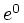
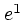
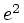
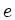
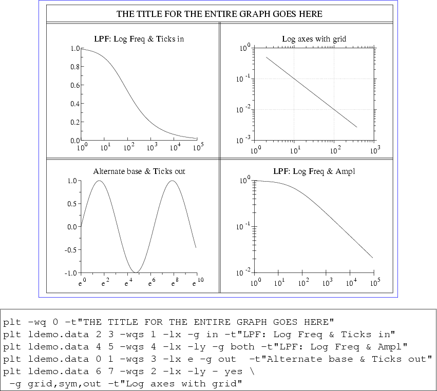
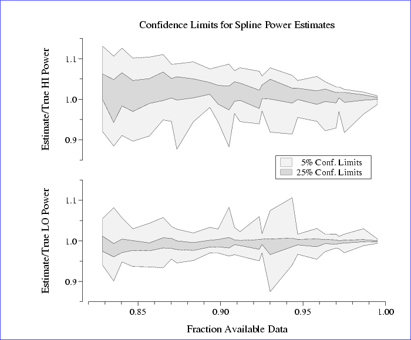

Next: Color Names
Up: plt Tutorial and Cookbook
Previous: Colors, Line Styles, and Fonts
Advanced Axis Options
This chapter introduces more options for manipulating and labelling
your axes, to provide fine control over the appearance of your plots.
- -lx base subticks
-
- -ly base subticks
- Use these options to create logarithmic x and y axes; base is the
base of the logarithms (default: 10), and subticks is either yes
or no. If the axis has a small number of major ticks, plt
draws subticks by default; use the subticks argument to change
plt's default behavior.
The -lx and -ly options affect only how the axes are
drawn; plt does not log-transform the input data, so you must provide
the logarithms of the data to be plotted. Note that base does
not have to be numeric; for example, ``-lx e'' will cause plt
to draw a logarithmic x-axis with ticks labelled , , ,
... (or other integer powers of  as appropriate for the range of abscissas).
- -xe xmin-error xmax-error
-
- -ye ymin-error ymax-error
- These options can be used to set the amounts by which the axis ranges are
allowed to exceed the ranges of the data when plt determines the
axis ranges automatically.
- -xm tick-base
-
- -ym tick-base
- Make axis ticks a multiple of the specified tick-base.
- -xo x-axis-offset
-
- -yo y-axis-offset
- These options allow the axes to be moved from their default positions;
they are particularly useful if data would otherwise be obscured by axis
markings. The -xo option moves the x axis down by x-axis-offset,
which is expressed as a fraction of the y axis length; the -yo option
moves the y axis left by y-axis-offset, which is a fraction of the x axis
length (see figure 11.4).
- -xr
-
- -yr
- Use these options to plot the x axis at the top of the plot, or the y
axis on the right side of the plot.
- -xt x label tick-size
-
- -yt y label tick-size
- These options add an extra labelled tick at the specified
 or
or  position
on the corresponding axis. label can be any string; if omitted, the
label is or , formatted in the same way as the other labelled axis
ticks. tick-size specifies the length of the tick, as a multiple of
the default length for labelled ticks; if omitted, tick-size is 1.
Use a negative tick-size to change the direction of the tick and the
placement of the label (the result depends also on the grid-mode;
see -g below).
position
on the corresponding axis. label can be any string; if omitted, the
label is or , formatted in the same way as the other labelled axis
ticks. tick-size specifies the length of the tick, as a multiple of
the default length for labelled ticks; if omitted, tick-size is 1.
Use a negative tick-size to change the direction of the tick and the
placement of the label (the result depends also on the grid-mode;
see -g below).
- -xts x tick-size
-
- -yts y tick-size
- Use these options to force a labelled tick to be placed at the specified or
positions on the axes, and to multiply the lengths of all ticks on the
corresponding axis by the factor tick-size (other than any extra ticks
generated using -xt or -yt). Use a negative tick-size to
change the direction of the tick and the placement of the labels (the result
depends also on the grid-mode; see -g below).
- -g grid-mode ...
- The -g option accepts one or more grid-mode specifiers,
which define how to create a grid. Note that if more than one grid-mode is supplied, they must be surrounded by quotes or separated
by commas, because -g takes only one string as its argument.
The defined grid-modes are:
| in |
puts ticks inside the grid |
| out |
puts ticks outside the grid (default) |
| both |
puts ticks inside and outside the grid |
| none |
suppresses ticks |
| sym |
make symmetric axes (at top and right) |
| grid |
make a full grid (extend major ticks across the entire plot) |
| xgrid |
extend major x axis ticks across the entire plot |
| ygrid |
extend major y axis ticks across the entire plot |
| sub |
make a fine grid (extend all ticks across the entire plot) |
Figure 12.1 demonstrates several of these options,
featuring logarithmic axes and a variety of grid modes. The data
file, ldemo.data, is included in the doc directory of the
plt distribution (see appendix F).
Figure 12.1:
This example demonstrates several of the
advanced axis options. It was produced using these commands:
|  |
As a final example, figure 12.2 demonstrates use of the O plotstyle, the -yo option for shifting the y axis to the
left, the -xts option to create an extra labelled tick mark, the
-size option (see appendix B), relative
parameter values in transient fontgroup specifications, overlays, and
multiple plot windows. The figure was created using the following commands:
plt power.data 0 1 2 3 4 5 -F"
size .7 5 5
sf p W1
W - .1 - .47
# P*1.5 means multiply point size by 1.5. The point size for the 'O'
# plot type has no effect on the plot, but changes the height of the
# box in the legend.
p 0,1,5O(G.95,P*1.5) 0,2,4O(G.85)
lp .7 1.2 .9
le 0 0 5% Conf. Limits
le 1 1 25% Conf. Limits
t
y Power Error
yo 0.02
y Estimate/True LO Power
xts .85
xa .82 1 .01 - 5
x Fraction Available Data"
plt power.data 0 6 7 8 9 10 -F"
s ex
size .7 5 5
sf p W1
W - .53 - .9
p 0,1,5O(G.95,P*1.5) 0,2,4O(G.85)
t Confidence Limits for Spline Power Estimates
xts .85
xa .82 1 .01 - 5
y Estimate/True HI Power
yo 0.02"
The data file, power.data, is included in the doc directory of
the plt distribution (see appendix F).
Figure 12.2:
A complex plot (see text).
|  |
Next: Color Names
Up: plt Tutorial and Cookbook
Previous: Colors, Line Styles, and Fonts
George B. Moody (george@mit.edu)
2005-04-26